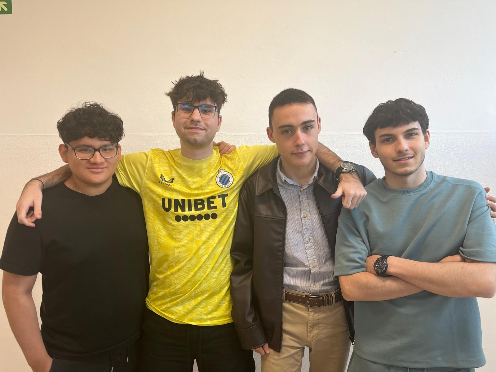
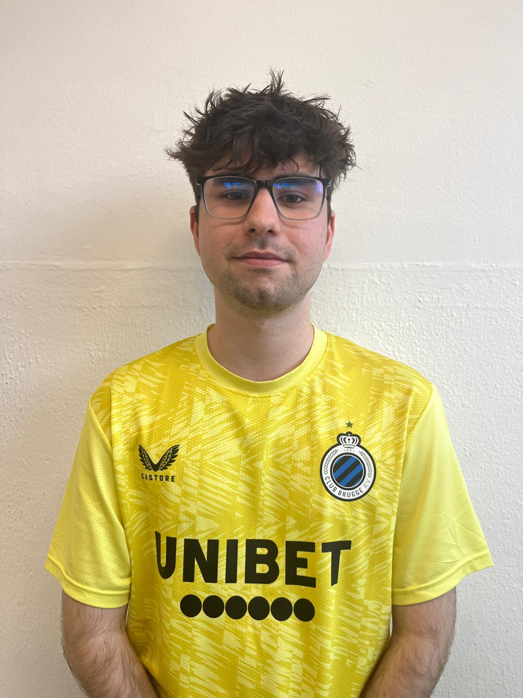
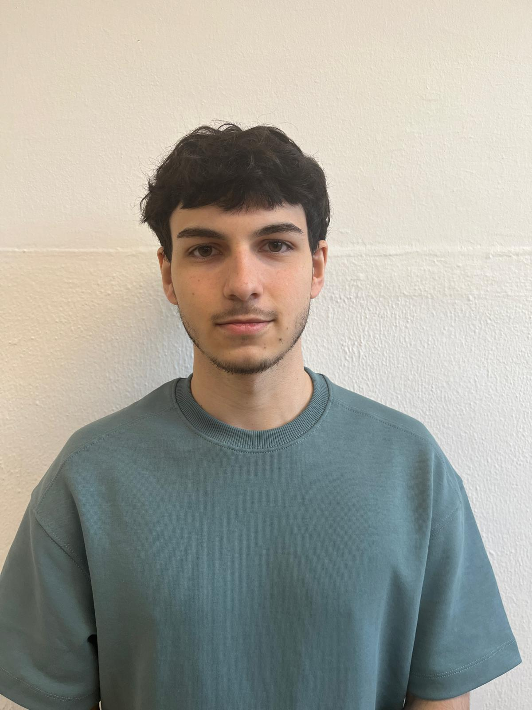
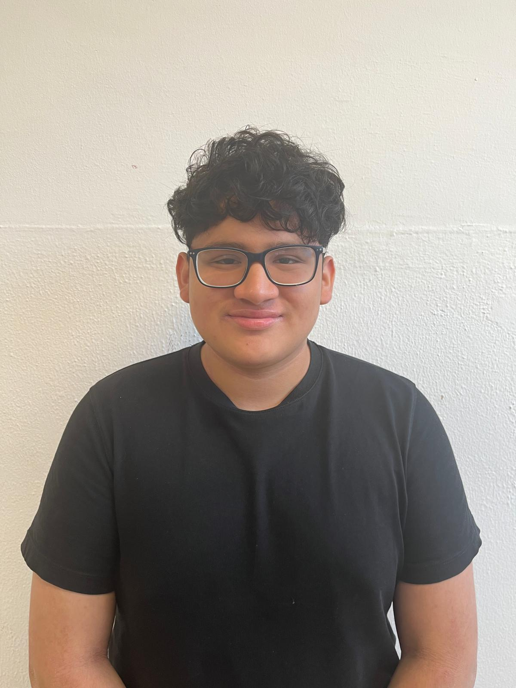
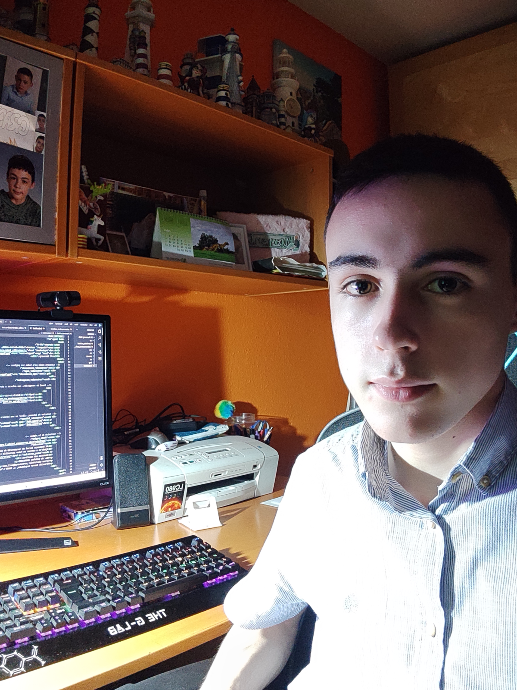

Com ONG, ens comprometem a col·laborar amb els Objectius de Desenvolupament Sostenible de l'Agenda 2030. La nostra causa cau directament en els àmbits de TRES Objectius diferents.
Intentem donar una segonda vida a qualsevol dispositiu que rebem, i si no es possible, el tractem d'una forma responsable i respectuosa amb el medi ambient.
El treball que realitzem aquí redueix la contaminació i contribueix a la protecció del planeta.
Formem gratuïtament a tota la població, a nens, adults i ancians sobre la gestió correcta de residus i sobre la importància de protegir el medi ambient.


Des de petit, l’Oriol sempre ha mostrat interès per la informàtica. Després d’un batxillerat que no li va anar gaire bé, va decidir anar-se’n al cicle de SMX i demostrar el seu perfil polivalent.
En Joel no sabia que fer després de l’ESO, fins que al 2019 li van comprar un ordinador per Nadal, i va començar a interessar-se per la informàtica. Avui dia està fent el cicle de SMX2 i té una especial predilecció per les xarxes.


Amb disset anys, en Brandon es troba estudiant un cicle d’SMX2 per formar-se al món de la tecnologia. Sempre ha sentit interès pel funcionament dels sistemes informàtics, cosa que el va motivar a entrar en aquest sector.
L'Eric ja mostrava interès per la informàtica a primària, i va fer un curs optatiu de robòtica a la ESO, abans de entrar en el cicle d'SMX. Hàbil en HTML i CSS, s'encarrega de dissenyar la pàgina web que ara mateix esteu llegint.
